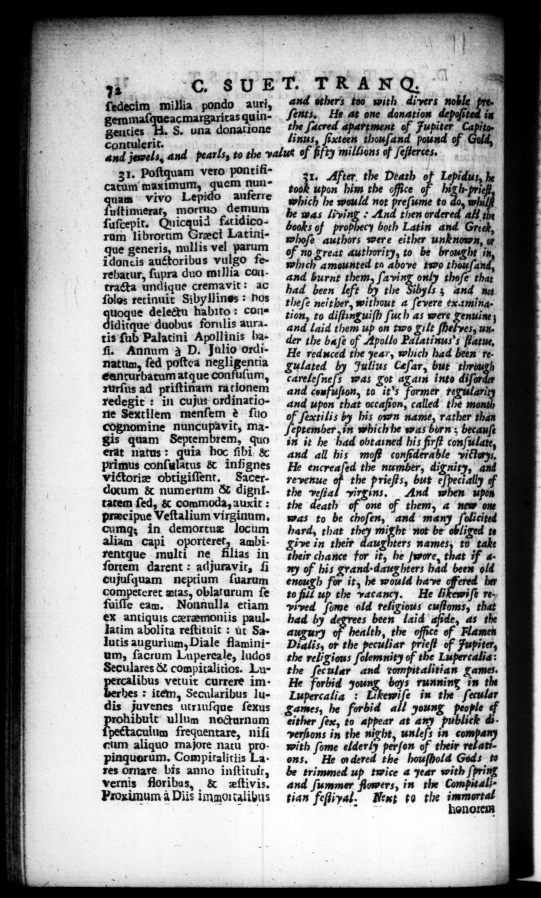

17 C. s UE T. TRAN Q. ; and others too with divers noble 7 g — millia — auri, em ac margaritas quin— S. una —.— contulerit. 4 1 TY F 1 = =_— 9 ſents, He at one donation depoſited in the ſacred apartment of Fupiter Capita linus, ſixteen thouſand pound of G and jewels, and pearls, to the value Fin millions of ſeſterces, 31. Poſtquam vero ponriticatum maximum, quem nunam vivo Lepido auferre uſtinnerat, mortuo demum ſuſcepit. r fat idicorum librorum Grect Latinique generis, nullis vel parum i donc is auctoribus vulgo ferebatur, ſupra duo millia contracta undique cremavit: ac ſolos retinuit Sibyllines: hos uoque delectu habito: condue ue duobus fornlis aura. tis ſub Palatini Apollinis bafi. Annum à D. Jalio ordinatum, ſed poſtea negligentia eanturbatum atque confuſum, rurſus ad priſtinam ra tionem redegit : in cujus ordinatione Sextilem menſem 2 ſuo cognomine nuncupavit, magis quam Septembrem, quo erat natus: quia hoc ſibi & primus conſulatus & infignes victoriæ obtigiſſent. Sacerdotum & numerum & dignitatem ſed, & commoda, auxit: preecipue Veſtalium virginum. cumq in demortuæ locum aliam capi oporteret, ambirentque multi ne filias in ſortem darent: adjuravit, fi cujuſquam neptium ſuarum en tas, Oblaturum ſe fuiſle eam. Nonnulla etiam ex antiquis cæræmoniis paul. latim abolita reſtituit: ut Salutis augurium, Diale flaminium, ſacrum Lupereale, ludos Seculares & compitalitios. Lu—— vetuit currere im · hes : item, Secularibus ludis juvenes utriuſque ſexus — ullum nocturnum pectaculum frequentare, niſi cum aliquo majore natu propinquorum. Compitalitiis Lk res ornare bis anno inſtituit, vernis floribus, & eſtivis. Proxunum a Diis immo talibus Ts Aj ter the Death 0 2 he upon him the office 7 . prief which he would not preſume to do, w he was living © And then ordered all books of prophecy both Latin and Greek, whoſe authors were either unknown, u of no great authority, to be brought it which amounted tn above two chauſand? and burnt 7 by avi only thoſe that had been left by the Sibyls ; and nu theſe neither, without a ſevere examingtion, to diſtinguiſh ſuch as were genuine and laid them up on two gilt 5, under the baſe of Apollo Palatinus's ſtatue, He reduced the year, which had been regulated by Julius Ceſar, but thy careleſneſs was got agam into diſar and coufuſron, to it's former 7 and upon that occaſion, called t won of ſextilis by his own name, rather than eptember, in which he was born ; becauſt in it he had obtamed his firſt conſulate, and all his mof# conſiderable vittarys, He encyeaſed the number, dignity, and revenue of the prieſts, but e peci the veſtal yirgins., And when un the death pn of them, 4 new one was to be choſen, and many ſolicited hard, that they might not be oblived to Live in their daughters names, to take their chance for it, he ſwore, if 4y of bis grand-daughters had been old enough for it, he would have ere ber to full up the vacancy. He likewiſe re. vived ſome old religious cuſtoms, that had by s been laid afide, as the augury of health, the office of Flames Dialis, or the peculiar prieſt of Fupiter, the religious ſolemnity of the Lupercalia: the ſecular and talitian games. He forbid 9 boys running in the Lupercalia : L ue in the ſecular games, he forbid all young —— 7 either ſex, to appear at any publick di. verſions in the night, unleſs in company with ſome elderly perſon of their rel ations. He ordered the houſhold Gods to be trimmed up twice a year with ſpri and ſummer flowers, in the Computa tian feſtival. Next to the immortal
